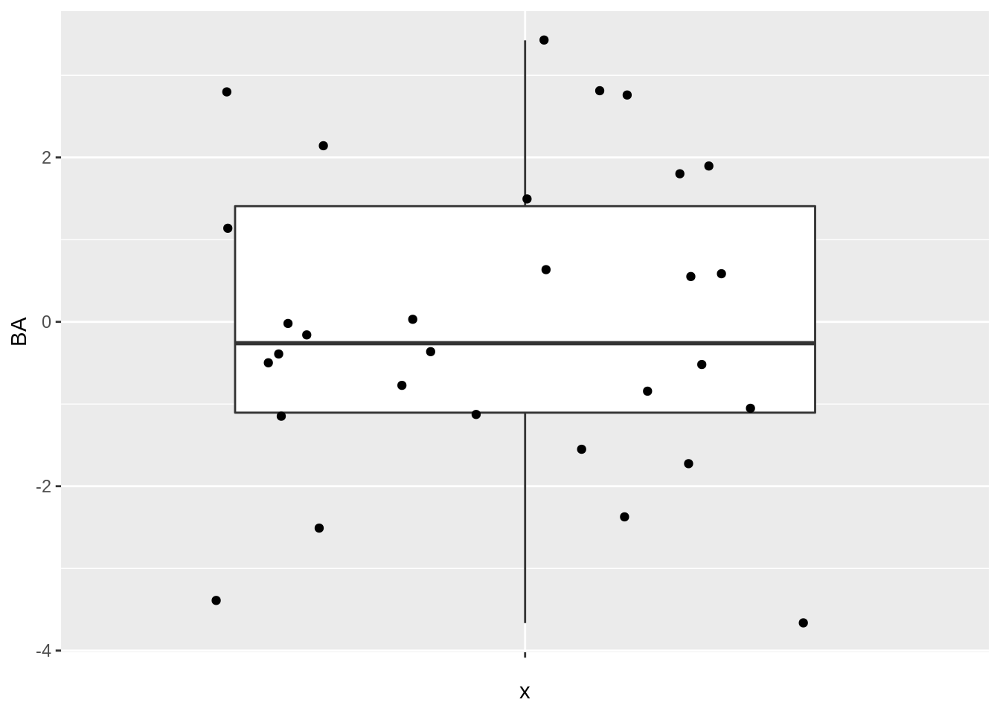
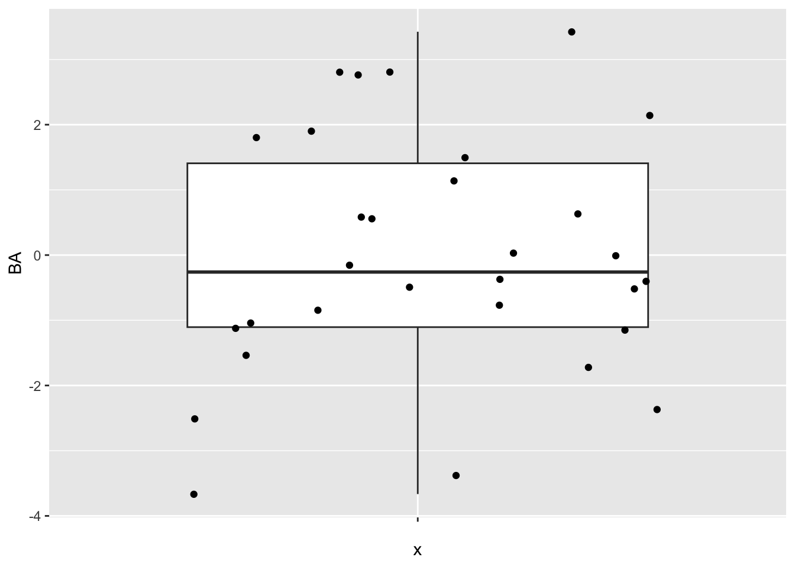
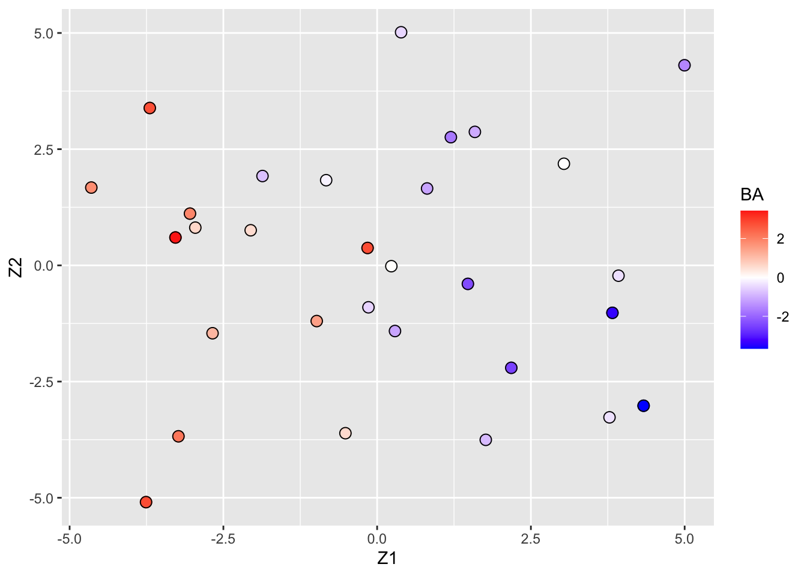
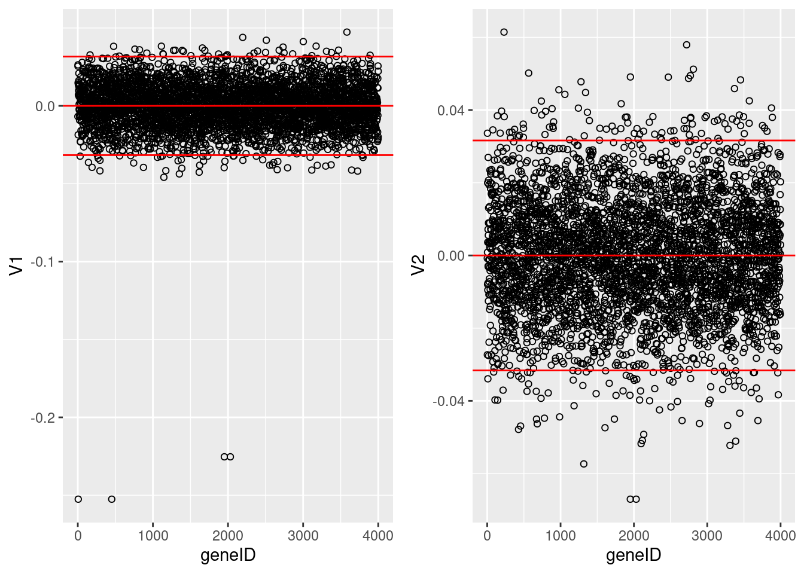
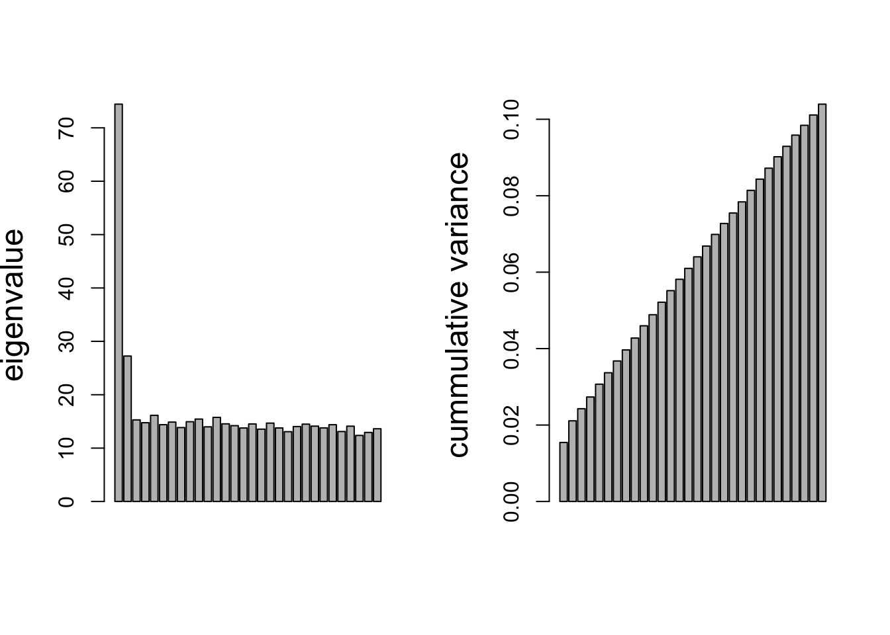
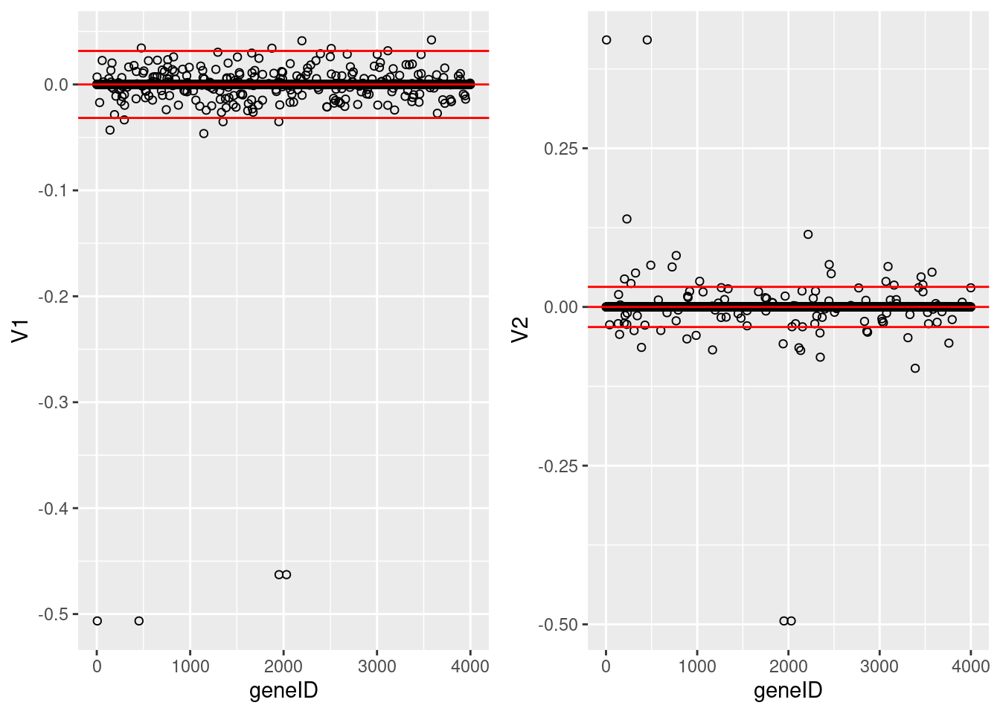
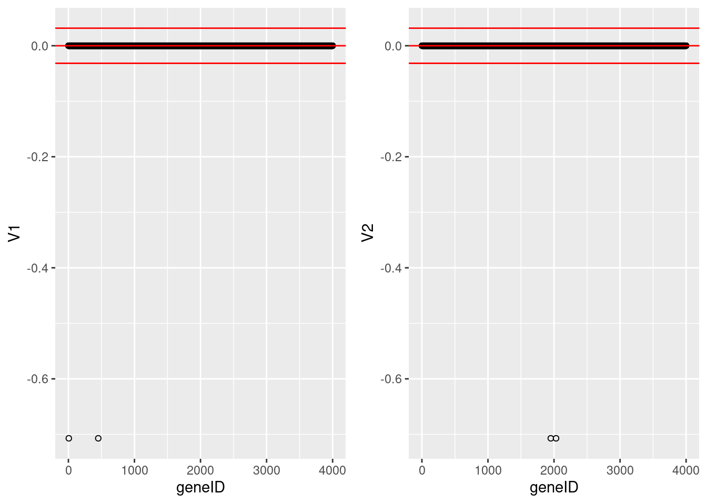
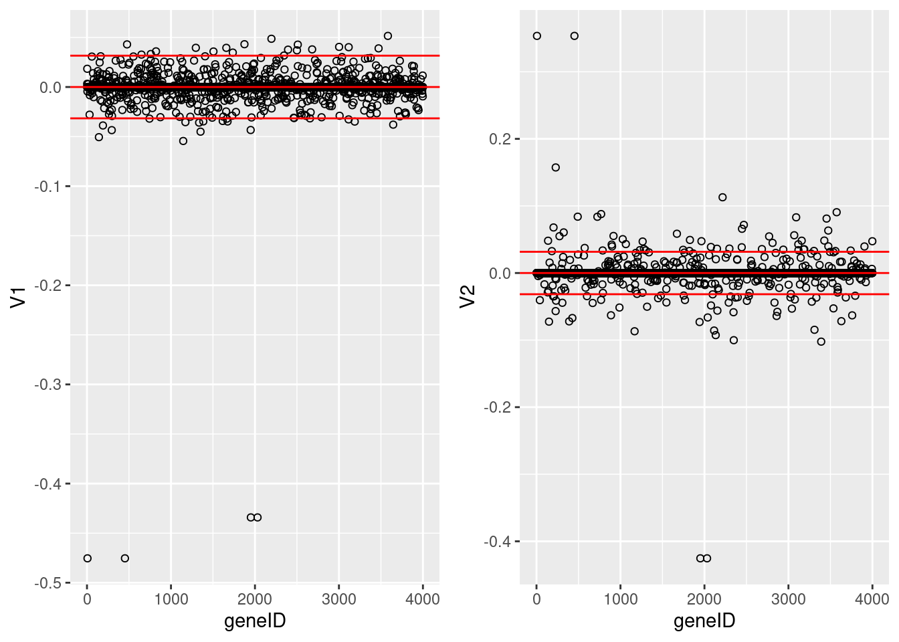
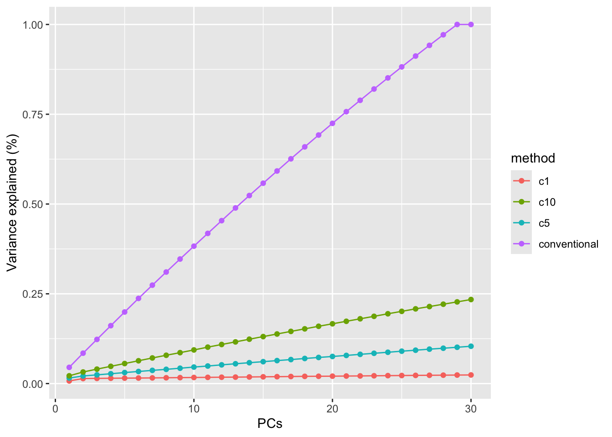

## ── Attaching packages ─────────────────────────────────────── tidyverse 1.3.1 ──## ✔ ggplot2 3.3.5 ✔ purrr 0.3.4
## ✔ tibble 3.1.6 ✔ dplyr 1.0.7
## ✔ tidyr 1.1.4 ✔ stringr 1.4.0
## ✔ readr 2.1.1 ✔ forcats 0.5.1## ── Conflicts ────────────────────────────────────────── tidyverse_conflicts() ──
## ✖ dplyr::filter() masks stats::filter()
## ✖ dplyr::lag() masks stats::lag()##
## Attaching package: 'gridExtra'## The following object is masked from 'package:dplyr':
##
## combineIn high dimensional data the PCs may have unclear interpretation because they depend on all \(p\) original variables.
Effect of compound on gene expression.
Insight in action and toxicity of drug in early phase
Determine activity with bio-assay: e.g. binding afinity of compound to cellwall recepter (target, IC50).
Early phase: 20 to 50 compounds
Based on in vitro results one aims to get insight in how to build better compound (higher on-target activity less toxicity.
Small variantions in moelculair structure lead to variations in BA and gene expression.
Aim: Build model to predict bio-activity based on gene expression in liver cell line.
30 chemical compounds have been screened for toxicity
Bioassay data on toxicity screening
Gene expressions in a liver cell line are profiled for each compound (4000 genes)
toxData <- read_csv(
"https://raw.githubusercontent.com/statOmics/HDA2020/data/toxDataCentered.csv",
col_types = cols()
)
svdX <- svd(toxData[,-1])Data is already centered:
## [1] -1.804112e-17 2.937465e-17## [1] "BA" "X1" "X2" "X3" "X4" "X5"
svdX <- toxData[,-1] %>%
svd
k <- 2
Vk <- svdX$v[,1:k]
Uk <- svdX$u[,1:k]
Dk <- diag(svdX$d[1:k])
Zk <- Uk%*%Dk
colnames(Zk) <- paste0("Z",1:k)
colnames(Vk) <- paste0("V",1:k)
pca <- Zk %>%
as.data.frame %>%
mutate(BA = toxData %>% pull(BA)) %>%
ggplot(aes(x= Z1, y = Z2, color = BA)) +
geom_point(size = 3) +
scale_colour_gradient2(low = "blue",mid="white",high="red") +
geom_point(size = 3, pch = 21, color = "black")
pca
Alternative graph to look at the many loadings of the first two PCs.
grid.arrange(
Vk %>%
as.data.frame %>%
mutate(geneID = 1:nrow(Vk)) %>%
ggplot(aes(x = geneID, y = V1)) +
geom_point(pch=21) +
geom_hline(yintercept = c(-2,0,2)*sd(Vk[,1]), col = "red") ,
Vk %>%
as.data.frame %>%
mutate(geneID = 1:nrow(Vk)) %>%
ggplot(aes(x = geneID, y = V2)) +
geom_point(pch=21) +
geom_hline(yintercept = c(-2,0,2)*sd(Vk[,2]), col = "red"),
ncol=2)
It is almost impossible to interpret the PCs because there are 4000 genes contributing to each PC.
In an attempt to find the most important genes (in the sense that they drive the interpretation of the PCs), the plots show horizontal reference lines: the average of the loadings, and the average ± twice the standard deviation of the loadings. In between the lines we expects about 95% of the loadings (if they were normally distributed).
The points outside the band come from the genes that have rather large loadings (in absolute value) and hence are important for the interpretation of the PCs.
Note, that particularly for the first PC, only a few genes show a markedly large loadings that are negative. This means that an upregulation of these genes will lead to low scores on PC1.
These genes will very likely play an important role in the toxicity mechanism.
Indeed, low scores on PC1 are in the direction of more toxicity.
Basic idea of sparse matrix decomposition of an \(n \times p\) matrix \(\mathbf{X}\)}
Find a rank \(k\) approximation of \(\mathbf{X}\) of the form \[ \mathbf{X}_k = \sum_{j=1}^k \delta_j \mathbf{u}_j\mathbf{v}_j^t \] such that many of the elements in the \(\mathbf{v}_j\) and or \(\mathbf{u}_j\) are exactly zero.
We focus on the Penalised Matrix Decomposition (PMD) method of Witten et al. (2009, Biostatistics, 10, 3, 515-534).
When many of the loadings in \(\mathbf{v}_j\) are zero, the interpretation of the PC only depends on the features that correspond to the remaining non-zero loadings.
The rank-1 PMD approximation of the \(n \times p\) matrix \(\mathbf{X}\) is of the form \[ \mathbf{X}_1 = \delta_1\mathbf{u}_1\mathbf{v}_1^t, \]
and it is the solution to the following minimisation problem: \[ \min_{\delta,u,v} \Vert \mathbf{X} - \delta\mathbf{u}\mathbf{v}^t\Vert_F^2 \text{ subject to } \delta \geq 0, \Vert \mathbf{u}\Vert_2^2=\Vert \mathbf{v}\Vert_2^2=1, \Vert\mathbf{u}\Vert_1\leq c_1, \Vert \mathbf{v}\Vert_1 \leq c_2 \]
for some user-defined constants \(c_1,c_2>0\).
The constraints \(\Vert\mathbf{u}\Vert_1\leq c_1\) and \(\Vert \mathbf{v}\Vert_1 \leq c_2\) are known as \(L_1\) or lasso constraints.
Note, \[ \Vert\mathbf{u}\Vert_1\ = \sum_{i=1}^n \vert u_i \vert \text{ and }\Vert\mathbf{v}\Vert_1\ = \sum_{i=1}^p \vert v_i\vert. \]
If \(c_1=+\infty\), then the constraint on \(\mathbf{u}\) is removed (similar for \(c_2\)).
Note that \[ \min_{\delta,u,v} \Vert \mathbf{X} - \delta\mathbf{u}\mathbf{v}^t\Vert_F^2 = \min_{A:\text{rank}(A)=1} \Vert \mathbf{X} - A\Vert_F^2 \] with \(A=X_1\) (truncated SVD of \(\mathbf{X}\), truncated after 1 term). However, the PMD requires a constrained minimisation. The unconstrained solution arises with \(c_1=c_2=+\infty\).
Note that \(\Vert \mathbf{u}\Vert_2^2=\Vert \mathbf{v}\Vert_2^2=1\) may also be written as \(\mathbf{u}^t\mathbf{u}=\mathbf{v}^t\mathbf{v}=1\) (i.e. the vectors are normalised, just like for the singular vectors of the SVD).
We also applied the \(L_1\) constraint to the least-squares estimator of the regression parameters in a linear regression model.
Effect was that many of the parameter estimates are set exactly to zero.
Here, the same effect will take place. Many of the elements in \(\mathbf{u}\) and \(\mathbf{v}\) will be set exactly to zero.
In particular, the smaller \(c_2\), the more elements of \(\mathbf{v}\) will be set to zero (shrinkage).
Similarly, the smaller \(c_1\), the more elements of \(\mathbf{u}\) will be set to zero.
The choice of \(c_1\) and \(c_2\) depends on the objective of the data analysis and will be discussed later.
The solution is known as a rank-1 PMD approximation of \(\mathbf{X}\) because \(\delta_1\mathbf{u}_1\mathbf{v}_1^t\) is a matrix of rank 1.
The rank-2 PMD approximation is found as follows:
find the rank-1 PMD as before: \(\mathbf{X}_1=\delta_1\mathbf{u}_1\mathbf{v}_1^t\);
compute \[ \tilde{\mathbf{X}}_2 = \mathbf{X}-\mathbf{X}_1, \]
and compute the rank-1 PMD of \(\tilde{\mathbf{X}}_2\), which gives \(\delta_2, \mathbf{u}_2, \mathbf{v}_2\);
Note that the \(\mathbf{u}\)’s and \(\mathbf{v}\)’s are not necessarily orthogonal (only if \(c_1, c_2=+\infty\)).
The rank-\(k\) PMD approximation is found as follows:
find the rank-1 PMD as before: \(\tilde{\mathbf{X}}_1=\delta_1\mathbf{u}_1\mathbf{v}_1^t\);
set \(j=1\);
compute \[ \tilde{\mathbf{X}}_{j+1} = \mathbf{X}-\tilde{\mathbf{X}}_1-\cdots - \tilde{\mathbf{X}}_j, \] and compute the rank-1 PMD of \(\tilde{\mathbf{X}}_{j+1}\), which gives \(\delta_{j+1}, \mathbf{u}_{j+1}, \mathbf{v}_{j+1}\);
if \(j<k\), increase \(j\) with one and go back to step 3; otherwise go to step 5;
the rank-\(k\) PMD of \(\mathbf{X}\) is then given by \[ \mathbf{X}_k = \sum_{j=1}^k \delta_j\mathbf{u}_j\mathbf{v}_j^t. \]
Without the \(L_1\) constraints, this algorithm gives the ordinary SVD.
As before the \(\delta_j\)s, \(\mathbf{u}_j\)s and \(\mathbf{v}_j\)s are stacked into matrices \(\mathbf{D}_k\), \(\mathbf{U}_k\) and \(\mathbf{V}_k\): \(\mathbf{X}_k = \mathbf{U}_k\mathbf{D}_k\mathbf{V}_k^t\).
Note that the \(\mathbf{u}\) vectors are generally not orthogonal (i.e. \(\mathbf{u}_i^t\mathbf{u}_j\neq 0\) for \(i\neq j\)) (the same holds for the \(\mathbf{v}\) vectors).
Just like the SVD can be used to find the PCA solution, the PMD can be used to find a sparse PCA solution (SPC).
For a PCA, it is only important to have sparse loadings (in the \(\mathbf{v}\)s); the scores (involving the \(\mathbf{u}\)s) need not be sparse.
The rank-1 solutions thus satisfy \[ \min_{\delta,u,v} \Vert \mathbf{X} - \delta\mathbf{u}\mathbf{v}^t\Vert_F^2 \text{ subject to } \delta \geq 0, \Vert \mathbf{u}\Vert_2^2=\Vert \mathbf{v}\Vert_2^2=1, \Vert \mathbf{v}\Vert_1 \leq c \] (i.e. no sparsity constraint on \(\mathbf{u}\)).
Hence the PCA scores \[ \mathbf{Z}_k = \mathbf{U}_k\mathbf{D}_k \] relate to \(\mathbf{X}_k\) through the sparse loadings in \(\mathbf{V}_k\).
It can be shown that the SPC solution (rank-1) also maximises \[ \mathbf{v}^t\mathbf{X}^t\mathbf{X}\mathbf{v} \text{ subject to } \Vert \mathbf{u}\Vert_2^2=\Vert \mathbf{v}\Vert_2^2=1, \Vert \mathbf{v}\Vert_1 \leq c \] (i.e. it maximises the variance of the PCs, subject to sparsity constraint on loadings).
From these two slides we may conclude that we can use the PMD as the basis of a sparse PCA, and that the interpretation is as before in terms of maximising variance. Only now we hope that only a few features will give a non-zero loading in the \(\mathbf{v}\)-vectors. Biplots may again be constructed (with fewer vectors to be plotted).
## 12345678910111213141516171819
## 1234567891011121314151617181920
## 1234567891011121314151617181920
## 1234567891011121314151617181920
## 1234567891011121314151617181920
## 1234567891011121314151617181920
## 1234567891011121314151617181920
## 1234567891011121314151617181920
## 1234567891011121314151617181920
## 1234567891011121314151617181920
## 1234567891011121314151617181920
## 1234567891011121314151617181920
## 1234567891011121314151617181920
## 1234567891011121314151617181920
## 1234567891011121314151617181920
## 1234567891011121314151617181920
## 1234567891011121314151617181920
## 1234567891011121314151617181920
## 1234567891011121314151617181920
## 1234567891011121314151617181920
## 1234567891011121314151617181920
## 1234567891011121314151617181920
## 1234567891011121314151617181920
## 1234567891011121314151617181920
## 1234567891011121314151617181920
## 1234567891011121314151617181920
## 1234567891011121314151617181920
## 1234567891011121314151617181920
## 1234567891011121314151617181920
## 1234567891011121314151617181920par(mfrow=c(1,2))
barplot(spcX$d^2,ylab="eigenvalue",cex.lab=1.5)
barplot(spcX$prop.var.explained,
ylab="cummulative variance",cex.lab=1.5)
The plot on the left shows the eigenvalues (squared singular values) from the PMD.
The figure on the right shows the cumulative percentage of variance retained in the PCs.
Loadings of the first two PCs, with constraint \(\Vert\mathbf{v}\Vert_1 < 5\).
k <- 2
Vk <- spcX$v[,1:k]
colnames(Vk) <- paste0("V",1:k)
grid.arrange(
Vk %>%
as.data.frame %>%
mutate(geneID = 1:nrow(Vk)) %>%
ggplot(aes(x = geneID, y = V1)) +
geom_point(pch=21) +
geom_hline(yintercept = c(-2,0,2)*sd(Vk[,1]), col = "red") ,
Vk %>%
as.data.frame %>%
mutate(geneID = 1:nrow(Vk)) %>%
ggplot(aes(x = geneID, y = V2)) +
geom_point(pch=21) +
geom_hline(yintercept = c(-2,0,2)*sd(Vk[,2]), col = "red"),
ncol=2)
These plots show the loadings of the first two sparse PCs. Many of the loadings are now exactly equal to zero. Only few genes show large loadings.
We now repeat the analysis, but with the constraint \(\Vert \mathbf{v} \Vert_1 < 1\). This gives a much sparser solution with only two genes with non-zero loadings in each dimension.
## 12
## 12
## 12
## 12
## 12
## 12
## 12
## 12
## 12
## 12
## 12
## 12
## 12
## 12
## 12
## 12
## 12
## 12
## 12
## 12
## 12
## 12
## 12
## 12
## 12
## 12
## 12
## 12
## 12
## 12k <- 2
Vk <- spcX1$v[,1:k]
colnames(Vk) <- paste0("V", 1:k)
grid.arrange(
Vk %>%
as.data.frame %>%
mutate(geneID = 1:nrow(Vk)) %>%
ggplot(aes(x = geneID, y = V1)) +
geom_point(pch=21) +
geom_hline(yintercept = c(-2,0,2)*sd(Vk[,1]), col = "red") ,
Vk %>%
as.data.frame %>%
mutate(geneID = 1:nrow(Vk)) %>%
ggplot(aes(x = geneID, y = V2)) +
geom_point(pch=21) +
geom_hline(yintercept = c(-2,0,2)*sd(Vk[,2]), col = "red"),
ncol=2)
We now repeat the analysis, but with the constraint \(\Vert \mathbf{v} \Vert_1 < 10\). This gives a much less sparse solution with several genes with non-zero loadings.
## 1234567891011121314151617181920
## 1234567891011121314151617181920
## 1234567891011121314151617181920
## 1234567891011121314151617181920
## 1234567891011121314151617181920
## 1234567891011121314151617181920
## 1234567891011121314151617181920
## 1234567891011121314151617181920
## 1234567891011121314151617181920
## 1234567891011121314151617181920
## 1234567891011121314151617181920
## 1234567891011121314151617181920
## 1234567891011121314151617181920
## 1234567891011121314151617181920
## 1234567891011121314151617181920
## 1234567891011121314151617181920
## 1234567891011121314151617181920
## 1234567891011121314151617181920
## 1234567891011121314151617181920
## 1234567891011121314151617181920
## 1234567891011121314151617181920
## 1234567891011121314151617181920
## 1234567891011121314151617181920
## 1234567891011121314151617181920
## 1234567891011121314151617181920
## 1234567891011121314151617181920
## 1234567891011121314151617181920
## 1234567891011121314151617181920
## 1234567891011121314151617181920
## 1234567891011121314151617181920k <- 2
Vk <- spcX10$v[,1:k]
colnames(Vk) <- paste0("V",1:k)
grid.arrange(
Vk %>%
as.data.frame %>%
mutate(geneID = 1:nrow(Vk)) %>%
ggplot(aes(x = geneID, y = V1)) +
geom_point(pch=21) +
geom_hline(yintercept = c(-2,0,2)*sd(Vk[,1]), col = "red") ,
Vk %>%
as.data.frame %>%
mutate(geneID = 1:nrow(Vk)) %>%
ggplot(aes(x = geneID, y = V2)) +
geom_point(pch=21) +
geom_hline(yintercept = c(-2,0,2)*sd(Vk[,2]), col = "red"),
ncol=2)
Variance explained for \(c=1,5,10\) and \(+\infty\).
data.frame(
PCs = 1:30,
"c1" = spcX1$prop.var.explained,
"c5" = spcX$prop.var.explained,
"c10" = spcX10$prop.var.explained,
"conventional" = cumsum(svdX$d^2)/sum(svdX$d^2)
) %>%
gather("method","varExpl",-1) %>%
ggplot(aes(x = PCs, y = varExpl, color = method)) +
geom_line() +
geom_point() +
ylab("Variance explained (%)")
This graph illustrates that the percentages of variance explained by the PCs are smaller for sparser solutions. Thus in choosing an appropriate penalty parameter \(c_2\) one should not only look at the sparseness of the solution, but also at the percentage of variance contained in the first few PCs. If this percentage is very small, then the graphs of the scores (or biplots) are no longer very informative (i.e. they will not tell the full story). Thus a compromise must be looked for.
library(latex2exp)
Uk5 <- spcX$u[,1:k]
Dk5 <- diag(spcX$d[1:k])
Zk5 <- Uk5%*%Dk5
colnames(Zk5) <- paste0("Z",1:k)
spc5 <- Zk5 %>%
as.data.frame %>%
mutate(BA = toxData %>% pull(BA)) %>%
ggplot(aes(x= Z1, y = Z2, color = BA)) +
geom_point(size = 3) +
scale_colour_gradient2(low = "blue",mid="white",high="red") +
geom_point(size = 3, pch = 21, color = "black") +
ggtitle(TeX("$c_2 = 5$"))
Uk1 <- spcX1$u[,1:k]
Dk1 <- diag(spcX1$d[1:k])
Zk1 <- Uk1%*%Dk1
colnames(Zk1) <- paste0("Z",1:k)
spc1 <- Zk1 %>%
as.data.frame %>%
mutate(BA = toxData %>% pull(BA)) %>%
ggplot(aes(x= Z1, y = Z2, color = BA)) +
geom_point(size = 3) +
scale_colour_gradient2(low = "blue",mid="white",high="red") +
geom_point(size = 3, pch = 21, color = "black") +
ggtitle(TeX("$c_2 = 1$"))
Uk10 <- spcX10$u[,1:k]
Dk10 <- diag(spcX10$d[1:k])
Zk10 <- Uk10%*%Dk10
colnames(Zk10) <- paste0("Z",1:k)
spc10 <- Zk10 %>%
as.data.frame %>%
mutate(BA = toxData %>% pull(BA)) %>%
ggplot(aes(x= Z1, y = Z2, color = BA)) +
geom_point(size = 3) +
scale_colour_gradient2(low = "blue",mid="white",high="red") +
geom_point(size = 3, pch = 21, color = "black") +
ggtitle(TeX("$c_2 = 10$"))
grid.arrange(spc1, spc5, spc10, pca + ggtitle(TeX("$c_2 = \\infty")), ncol = 2)
Finally we show the plots of the scores on the first two sparse PCs for \(c_2=1\) (top-left), \(c_2=5\) (top-right) and \(c_2=10\) (bottom-left) and \(c_2=\infty\) (bottom-right, convention SVD).
Note, that the most sparse solution (top-left) shows a strong positive correlation between the first two PCs (as a consequence of the loss of orthogonality of the singular vectors).
All graphs succeed quite well in separating the toxic from the non-toxic compounds based on their gene expression.
Hence, we may expect that the two genes identified from the most sparse solution play an important role in the development of toxic effects.
Note, however, that our data analysis did not provide a scientific proof for this conclusion: (sparse) PCA is only an exploratory or descriptive data analysis method that helps the data-analyst to gain insight into the data.
The fact that we found a few genes that appear to be associated with toxicity is of course a nice result.
It is important to understand that the toxicity outcome was not used in the (sparse) PCA. We only used the toxicity to color the points in the graphs. PCA is an unsupervised method.
Session info
## [1] "2022-02-03 16:40:43 UTC"## ─ Session info ───────────────────────────────────────────────────────────────
## setting value
## version R version 4.1.2 (2021-11-01)
## os Ubuntu 20.04.3 LTS
## system x86_64, linux-gnu
## ui X11
## language (EN)
## collate C.UTF-8
## ctype C.UTF-8
## tz UTC
## date 2022-02-03
## pandoc 2.7.3 @ /usr/bin/ (via rmarkdown)
##
## ─ Packages ───────────────────────────────────────────────────────────────────
## ! package * version date (UTC) lib source
## P assertthat 0.2.1 2019-03-21 [?] CRAN (R 4.1.2)
## P backports 1.4.1 2021-12-13 [?] CRAN (R 4.1.2)
## P BiocManager 1.30.16 2021-06-15 [?] CRAN (R 4.1.2)
## P bit 4.0.4 2020-08-04 [?] CRAN (R 4.1.2)
## P bit64 4.0.5 2020-08-30 [?] CRAN (R 4.1.2)
## P bookdown 0.24 2021-09-02 [?] CRAN (R 4.1.2)
## P broom 0.7.11 2022-01-03 [?] CRAN (R 4.1.2)
## P bslib 0.3.1 2021-10-06 [?] CRAN (R 4.1.2)
## P cellranger 1.1.0 2016-07-27 [?] CRAN (R 4.1.2)
## P cli 3.1.1 2022-01-20 [?] CRAN (R 4.1.2)
## P colorspace 2.0-2 2021-06-24 [?] CRAN (R 4.1.2)
## P crayon 1.4.2 2021-10-29 [?] CRAN (R 4.1.2)
## P curl 4.3.2 2021-06-23 [?] CRAN (R 4.1.2)
## P DBI 1.1.2 2021-12-20 [?] CRAN (R 4.1.2)
## P dbplyr 2.1.1 2021-04-06 [?] CRAN (R 4.1.2)
## P digest 0.6.29 2021-12-01 [?] CRAN (R 4.1.2)
## P dplyr * 1.0.7 2021-06-18 [?] CRAN (R 4.1.2)
## P ellipsis 0.3.2 2021-04-29 [?] CRAN (R 4.1.2)
## P evaluate 0.14 2019-05-28 [?] CRAN (R 4.1.2)
## P fansi 1.0.2 2022-01-14 [?] CRAN (R 4.1.2)
## P farver 2.1.0 2021-02-28 [?] CRAN (R 4.1.2)
## P fastmap 1.1.0 2021-01-25 [?] CRAN (R 4.1.2)
## P forcats * 0.5.1 2021-01-27 [?] CRAN (R 4.1.2)
## P fs 1.5.2 2021-12-08 [?] CRAN (R 4.1.2)
## P generics 0.1.1 2021-10-25 [?] CRAN (R 4.1.2)
## P ggplot2 * 3.3.5 2021-06-25 [?] CRAN (R 4.1.2)
## P glue 1.6.1 2022-01-22 [?] CRAN (R 4.1.2)
## P gridExtra * 2.3 2017-09-09 [?] CRAN (R 4.1.2)
## P gtable 0.3.0 2019-03-25 [?] CRAN (R 4.1.2)
## P haven 2.4.3 2021-08-04 [?] CRAN (R 4.1.2)
## P highr 0.9 2021-04-16 [?] CRAN (R 4.1.2)
## P hms 1.1.1 2021-09-26 [?] CRAN (R 4.1.2)
## P htmltools 0.5.2 2021-08-25 [?] CRAN (R 4.1.2)
## P httr 1.4.2 2020-07-20 [?] CRAN (R 4.1.2)
## P jquerylib 0.1.4 2021-04-26 [?] CRAN (R 4.1.2)
## P jsonlite 1.7.3 2022-01-17 [?] CRAN (R 4.1.2)
## P knitr 1.37 2021-12-16 [?] CRAN (R 4.1.2)
## P labeling 0.4.2 2020-10-20 [?] CRAN (R 4.1.2)
## P latex2exp * 0.9.0 2022-01-24 [?] CRAN (R 4.1.2)
## P lifecycle 1.0.1 2021-09-24 [?] CRAN (R 4.1.2)
## P lubridate 1.8.0 2021-10-07 [?] CRAN (R 4.1.2)
## P magrittr 2.0.2 2022-01-26 [?] CRAN (R 4.1.2)
## P modelr 0.1.8 2020-05-19 [?] CRAN (R 4.1.2)
## P munsell 0.5.0 2018-06-12 [?] CRAN (R 4.1.2)
## P pillar 1.6.5 2022-01-25 [?] CRAN (R 4.1.2)
## P pkgconfig 2.0.3 2022-01-28 [?] Github (r-lib/pkgconfig@b81ae03)
## P PMA * 1.2.1 2020-02-03 [?] CRAN (R 4.1.2)
## P purrr * 0.3.4 2020-04-17 [?] CRAN (R 4.1.2)
## P R6 2.5.1 2021-08-19 [?] CRAN (R 4.1.2)
## P Rcpp 1.0.8 2022-01-13 [?] CRAN (R 4.1.2)
## P readr * 2.1.1 2021-11-30 [?] CRAN (R 4.1.2)
## P readxl 1.3.1 2019-03-13 [?] CRAN (R 4.1.2)
## P renv 0.15.2 2022-01-24 [?] CRAN (R 4.1.2)
## P reprex 2.0.1 2021-08-05 [?] CRAN (R 4.1.2)
## P rlang 1.0.0 2022-01-26 [?] CRAN (R 4.1.2)
## P rmarkdown 2.11 2021-09-14 [?] CRAN (R 4.1.2)
## P rstudioapi 0.13 2020-11-12 [?] CRAN (R 4.1.2)
## P rvest 1.0.2 2021-10-16 [?] CRAN (R 4.1.2)
## P sass 0.4.0 2021-05-12 [?] CRAN (R 4.1.2)
## P scales 1.1.1 2020-05-11 [?] CRAN (R 4.1.2)
## P sessioninfo 1.2.2 2021-12-06 [?] CRAN (R 4.1.2)
## P stringi 1.7.6 2021-11-29 [?] CRAN (R 4.1.2)
## P stringr * 1.4.0 2019-02-10 [?] CRAN (R 4.1.2)
## P tibble * 3.1.6 2021-11-07 [?] CRAN (R 4.1.2)
## P tidyr * 1.1.4 2021-09-27 [?] CRAN (R 4.1.2)
## P tidyselect 1.1.1 2021-04-30 [?] CRAN (R 4.1.2)
## P tidyverse * 1.3.1 2021-04-15 [?] CRAN (R 4.1.2)
## P tzdb 0.2.0 2021-10-27 [?] CRAN (R 4.1.2)
## P utf8 1.2.2 2021-07-24 [?] CRAN (R 4.1.2)
## P vctrs 0.3.8 2021-04-29 [?] CRAN (R 4.1.2)
## P vroom 1.5.7 2021-11-30 [?] CRAN (R 4.1.2)
## P withr 2.4.3 2021-11-30 [?] CRAN (R 4.1.2)
## P xfun 0.29 2021-12-14 [?] CRAN (R 4.1.2)
## P xml2 1.3.3 2021-11-30 [?] CRAN (R 4.1.2)
## P yaml 2.2.2 2022-01-25 [?] CRAN (R 4.1.2)
##
## [1] /home/runner/work/HDDA/HDDA/renv/library/R-4.1/x86_64-pc-linux-gnu
## [2] /opt/R/4.1.2/lib/R/library
##
## P ── Loaded and on-disk path mismatch.
##
## ──────────────────────────────────────────────────────────────────────────────